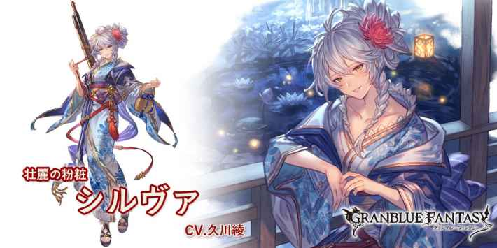
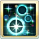

當自己未行動的回合結束時，自己即奧
我方4C以上時，自己2技CD-2
浴衣シルヴァ
基本資訊
| 定位 | 攻擊 |
| 得意武器 | 銃 |
| 種族 | 人類 |
| CV | 久川綾 |
立繪
上限解放前||上限解放後

奧義
| サルヴェ･ブリット | |
| 火屬性12.5倍傷害 敵方焦眉效果 └敵方受到傷害+30%×6次 └弱體效果必中 |
主動技能
CD:7 |
サイレントエイム |
| 賦予自己無聲瞄準效果(5T/無法消除) •無法普攻 •敵對心大幅下降 •發動奧義時，下一個位置的角色獲得2動效果 •回合結束時，火屬性角色奧義值+15% •回合結束時，火屬性角色奧義傷害+10%(累積/最多100%/無法消除) •回合結束時，火屬性角色奧義上限+5%(累積/最多50%/無法消除) |
|
|  CD:7 |
次弾装填 |
| 火屬性角色奧義值+30% •發動第2次起，追加奧義傷害+80%(1次)/奧義上限+20%(1次) •發動第3次起，追加傷害上限+5%(4T) |
|
CD:7 |
アーミティウス |
| 敵方單體風屬性攻擊-15%，持續180秒 敵方單體DA/TA-50%，持續180秒 •發動第2次起，追加重力效果，持續180秒 •發動第3次起，追加命中率-50%(3T) |
被動技能
|
夜祭のスナイパー |
| 普攻奧義值不會上升 當自己未行動的回合結束時，自己即奧 |
|
|
正射必中 |
| 自己的奧義無視敵方的幻影和迴避效果 我方4C以上時，自己2技CD-2 |